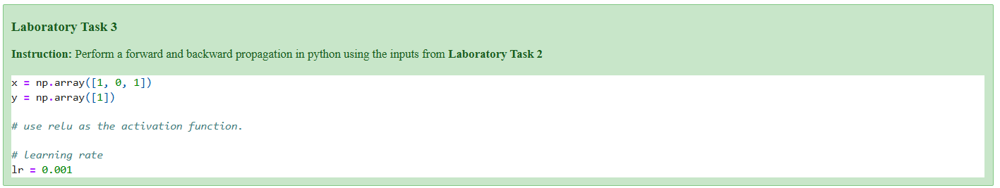

Laboratory Activity 3#

Define Inputs and Weights#
We begin by defining the input vector x, target output y, hidden layer weights (W_hidden), and output layer parameters (theta).
The learning rate (lr) is also set to control how much the weights are updated during backpropagation.
# Define inputs, weights, target, and learning rate (given values)
import numpy as np
print("Define inputs and weights (as given)")
x = np.array([1., 0., 1.]) # input vector
y = 1. # target scalar
W_hidden = np.array([ # shape (3,2) inputs->2 hidden units
[0.2, -0.3],
[0.4, 0.1],
[-0.5, 0.2]
])
theta = np.array([-0.4, 0.2, 0.1]) # [bias, w_h1, w_h2]
lr = 0.001 # learning rate
print("x =", x)
print("y =", y)
print("W_hidden =\n", W_hidden)
print("theta =", theta)
print("learning rate =", lr)
Define inputs and weights (as given)
x = [1. 0. 1.]
y = 1.0
W_hidden =
[[ 0.2 -0.3]
[ 0.4 0.1]
[-0.5 0.2]]
theta = [-0.4 0.2 0.1]
learning rate = 0.001
We begin by defining the input vector x, target output y, hidden layer weights (W_hidden), and output layer parameters (theta).
The learning rate (lr) is also set to control how much the weights are updated during backpropagation.
Explanation:
x = [1, 0, 1]: Represents one data sample with three input features.y = 1: The expected (target) output value.W_hidden: Weights connecting the input layer to the two hidden neurons.theta: Parameters for the output layer, including bias and weights for each hidden neuron.lr = 0.001: A small step size for updating the weights during learning.
Output Pre-Activation (z_out) and Prediction (ŷ)#
We now compute the output neuron’s pre-activation value using the output layer parameters (theta).
# Forward pass - output pre-activation and prediction (identity)
print("Forward pass - output pre-activation (z_out) and prediction y_hat")
bias = theta[0]
w_h = theta[1:] # [w_h1, w_h2]
z_out = bias + w_h.dot(a_hidden) # scalar
y_hat = z_out # identity activation
print("bias =", bias)
print("w_h =", w_h)
print("z_out =", z_out)
print("y_hat =", y_hat)
Forward pass - output pre-activation (z_out) and prediction y_hat
bias = -0.4
w_h = [0.2 0.1]
z_out = -0.4
y_hat = -0.4
Explanation:
Formula:
[ z_{out} = \text{bias} + (a_{hidden} \cdot w_{hidden}) ]With
bias = -0.4,w_h = [0.2, 0.1], anda_hidden = [0, 0],
→z_out = -0.4The prediction (ŷ) uses an identity activation, so
ŷ = -0.4.The network predicts -0.4, far from the true output
y = 1.
Compute Loss (Mean Squared Error)#
We measure how far the prediction is from the true target using the Mean Squared Error (MSE) loss function.
# Compute loss (MSE: 0.5*(y - y_hat)^2)
print("Compute loss (MSE)")
loss = 0.5 * (y - y_hat)**2
print("loss =", loss)
Compute loss (MSE)
loss = 0.9799999999999999
Explanation:
Formula:
[ E = \frac{1}{2}(y - \hat{y})^2 ]Result:
E = 0.98A high loss indicates a large prediction error.
Backpropagation – Gradients at Output Layer#
We now compute the gradients of the loss with respect to the output neuron parameters (theta).
# Backpropagation - gradients at output layer
# For identity output, d y_hat / d z_out = 1
print("Backpropagation - gradients at output layer")
dE_dyhat = -(y - y_hat) # derivative of 0.5*(y-ŷ)^2 wrt ŷ = -(y-ŷ)
dyhat_dzout = 1.0
dE_dzout = dE_dyhat * dyhat_dzout
print("dE/dy_hat =", dE_dyhat)
print("dE/dz_out =", dE_dzout)
# Gradients w.r.t theta parameters: d z_out / d theta = [1, a_h1, a_h2]
dE_dtheta = np.array([dE_dzout * 1.0, dE_dzout * a_hidden[0], dE_dzout * a_hidden[1]])
print("dE/dtheta =", dE_dtheta)
Backpropagation - gradients at output layer
dE/dy_hat = -1.4
dE/dz_out = -1.4
dE/dtheta = [-1.4 -0. -0. ]
Explanation:
The derivative of MSE w.r.t. the output is:
[ \frac{\partial E}{\partial \hat{y}} = (\hat{y} - y) ]So,
dE/dy_hat = -1.4anddE/dz_out = -1.4.The gradients for output weights are then:
[ dE/d\theta = [-1.4, 0, 0] ]Only the bias term receives a gradient because the hidden activations were both 0.
Parameter Updates#
Now we update all weights and biases using the computed gradients and learning rate (lr = 0.001).
# Parameter updates (gradient descent)
print("Parameter updates using learning rate lr =", lr)
# Update theta: theta_new = theta - lr * dE/dtheta
theta_new = theta - lr * dE_dtheta
# Update W_hidden similarly
W_hidden_new = W_hidden - lr * dE_dW_hidden
print("theta_old =", theta)
print("dE/dtheta =", dE_dtheta)
print("theta_new =", theta_new)
print("\nW_hidden_old =\n", W_hidden)
print("dE/dW_hidden =\n", dE_dW_hidden)
print("W_hidden_new =\n", W_hidden_new)
Parameter updates using learning rate lr = 0.001
theta_old = [-0.4 0.2 0.1]
dE/dtheta = [-1.4 -0. -0. ]
theta_new = [-0.3986 0.2 0.1 ]
W_hidden_old =
[[ 0.2 -0.3]
[ 0.4 0.1]
[-0.5 0.2]]
dE/dW_hidden =
[[-0. -0.]
[-0. -0.]
[-0. -0.]]
W_hidden_new =
[[ 0.2 -0.3]
[ 0.4 0.1]
[-0.5 0.2]]
Explanation:
Update rule:
[ \theta_{new} = \theta_{old} - lr \times dE/d\theta ]Only the bias term changes slightly:
theta_new = [-0.3986, 0.2, 0.1]Hidden weights remain the same because their gradients were zero.
Summary and Interpretation#
# Summary of gradients and small commentary
print("Summary and interpretation")
print(f"Because both hidden ReLU units were inactive (a_hidden = [0,0]), the gradients flowing")
print("into the hidden weights are zero for inputs where x=0, and proportional to x where x=1.")
print("Numeric results:")
print("dE/dtheta:", dE_dtheta)
print("dE/dW_hidden:\n", dE_dW_hidden)
print("\nNote: Because a_hidden = [0,0], dE/dtheta's second and third components are zero.")
print("Also, the output error is large because prediction (-0.4) is far from target (1).")
print("-- End --\n")
Summary and interpretation
Because both hidden ReLU units were inactive (a_hidden = [0,0]), the gradients flowing
into the hidden weights are zero for inputs where x=0, and proportional to x where x=1.
Numeric results:
dE/dtheta: [-1.4 -0. -0. ]
dE/dW_hidden:
[[-0. -0.]
[-0. -0.]
[-0. -0.]]
Note: Because a_hidden = [0,0], dE/dtheta's second and third components are zero.
Also, the output error is large because prediction (-0.4) is far from target (1).
-- End --
Final Analysis:
Both hidden ReLU units were inactive (
a_hidden = [0, 0]), so they did not contribute to learning in this step.As a result, the hidden weights did not update, and only the bias term changed slightly.
The prediction error remains high (
ŷ = -0.4vsy = 1), showing that the network did not learn effectively on this input.
Key takeaways:
ReLU can “die” (stop learning) if neurons receive only negative activations.
Proper initialization and varied inputs are crucial for training success.
Forward and backward propagation form the foundation of neural network learning.